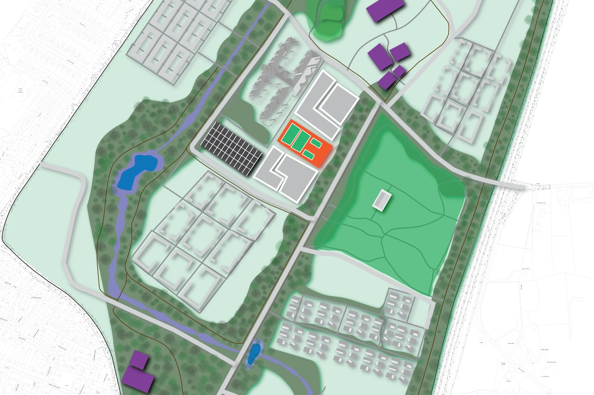

Original masterplan · Interactive 01Landscape strategy · Urban extension
Langley Flow
A connected landscape of homes, water and community, with restored Langley Brook, wetland landscapes, neighbourhood hubs and walkable routes.
Landscape architecture · ecological design · research
I create spatial strategies where water, ecology, movement and community work as one connected system.
Selected work
Use the filters to move between landscape design, ecological research and product innovation.

Original masterplan · Interactive 01Landscape strategy · Urban extension
A connected landscape of homes, water and community, with restored Langley Brook, wetland landscapes, neighbourhood hubs and walkable routes.
Ecological research
Assessing carbon sequestration, soil organic carbon and microbial biomass across turfgrass systems.
Product innovation · Hydroponics
A modular root-distribution system designed to improve support, aeration and nutrient access in compact hydroponic kits.
Habitat design · Pollinators
A seasonal network of nesting and foraging habitats embedded within movement corridors and restored hedgerows.
01 / Featured project · Interactive masterplan
Explore the actual masterplan. Select a numbered point to discover the landscape strategies and spaces documented in the original drawing.
Go deeper / Design process
From site observations and historic hedgerow analysis to the movement network, landscape concepts and final masterplan — view the complete 58-page Langley Flow workbook.
The locations and descriptions follow the submitted Langley Flow sheet. Interactive markers are navigation aids, not additional design proposals.
Open full-size drawing ↗Design position
My background in horticulture, ecological research and landscape architecture allows me to move between scientific evidence and spatial design. I am particularly interested in blue-green infrastructure, climate adaptation, pollinator habitats and equitable public space.
I work across mapping, masterplanning, section development, visual communication and research-led design.
Discuss a project ↗Experience and recognition
Birmingham City University · Conversion Masters with Professional Placement
International Conference on Ornamental Horticulture · Blue-green infrastructure planning
Hydroponics research, nutrient systems and root-retainer product innovation
Tamil Nadu Agricultural University · Coimbatore, India
Selected tools
Let’s connect
For placement opportunities, collaborations or questions about my work, feel free to email me or connect on LinkedIn.